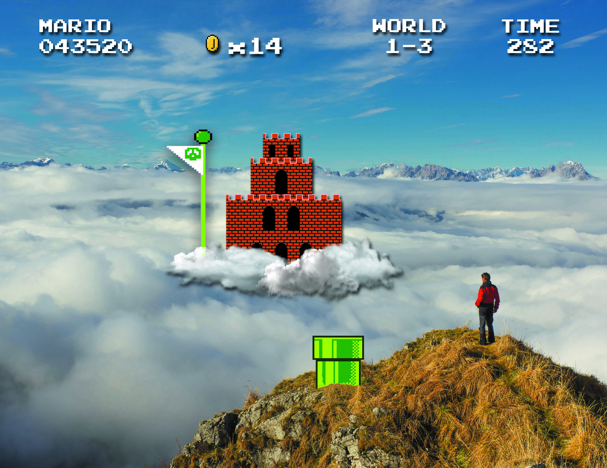

This collage was created through photoshop. The image was inspired by the aerial levels in the video game "Super Mario." The concept of this work draws from the desire for escapism in today's world as well as contrasting the most convenient outlet being games and the more respected travel and exploration of the real world.
